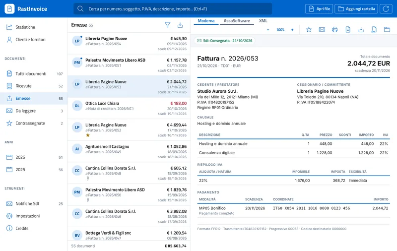

Come aprire una fattura elettronica XML
Una fattura elettronica è un file XML nel formato FatturaPA: aperta con un browser o con il Blocco note mostra solo codice. Per leggerla serve un visualizzatore, che trasforma i dati in un documento leggibile con intestazione, righe, IVA e pagamenti.
I passi
- Scarica RastInvoice. È gratuito su Windows e Linux e costa 2,99 € sul Mac App Store. Non richiede account né connessione a Internet.
- Apri il file. Fai doppio clic sul file
.xml, trascinalo nella finestra di RastInvoice oppure usa il pulsante Apri file. Puoi aprire anche un'intera cartella con tutte le sottocartelle. - Leggi la fattura. La fattura compare nella vista Moderna, compatta e leggibile. Puoi passare al foglio di stile ufficiale AssoSoftware o all'XML formattato con le schede in alto.
- Stampa o salva. Dall'anteprima puoi stampare la fattura, salvarla in PDF o in HTML e aprire gli allegati senza uscire dal programma.

Cosa contiene il file XML
Il file XML della fattura elettronica contiene i dati del cedente e del cessionario, il tipo di documento (per esempio TD01 per la fattura), le righe con quantità, prezzi e aliquote, il riepilogo IVA, le condizioni di pagamento e gli eventuali allegati codificati nel file. RastInvoice legge tutte queste informazioni secondo le specifiche tecniche FatturaPA 1.9.1 e decodifica i codici, come la natura IVA o la modalità di pagamento.
Quali fatture si possono aprire
- Fatture tra privati (formato FPR12) e verso la Pubblica Amministrazione (FPA12)
- Fatture semplificate (FSM10)
- Lotti con più fatture nello stesso file
- File in UTF-8, UTF-16, ISO-8859-1 e Windows-1252
- Ricevute e notifiche del Sistema di Interscambio, riconosciute e collegate alla fattura
Domande frequenti
Si può aprire una fattura XML con il browser?
I browser mostrano il codice XML. Alcuni applicavano il foglio di stile, ma Chrome rimuove il supporto XSLT dalla versione 158 (17 novembre 2026). Un visualizzatore come RastInvoice non dipende dal browser.
Serve Internet per aprire la fattura?
No. RastInvoice legge il file sul computer e non lo invia a nessun server.
Come apro tutte le fatture di una cartella?
Usa Aggiungi cartella: RastInvoice legge la cartella e le sottocartelle, anche su disco di rete o NAS, e mostra un elenco con ricerca e filtri.